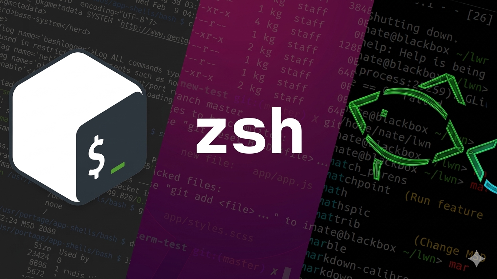

Intérpretes de Comandos: Bash, Zsh y Fish
En el ecosistema de sistemas operativos tipo Unix y distribuciones Linux, el intérprete de comandos o "shell" es la herramienta fundamental de interacción entre el usuario y el kernel. Lejos de ser simples terminales de texto, los shells modernos han evolucionado para convertirse en potentes entornos de programación que permiten automatizar tareas complejas, gestionar flujos de trabajo de desarrollo web y administrar servidores de manera eficiente mediante una interfaz de línea de comandos (CLI).

Historia y Evolución
Lo que hace a los shells un objeto de estudio fascinante es cómo han pasado de ser herramientas de entrada de datos a entornos altamente personalizables y productivos para ingenieros de software:
- El Legado de Bourne (Bash): Lanzado en 1989 como parte del proyecto GNU, Bash (Bourne Again Shell) se convirtió en el estándar de la industria. Su compatibilidad con scripts antiguos y su ubicuidad lo hacen indispensable para cualquier desarrollador web que gestione despliegues en servidores remotos.
- La Modernización con Zsh: Zsh (Z Shell) introdujo mejoras significativas en la experiencia de usuario, como el autoconsignado inteligente y la corrección ortográfica de comandos. Con frameworks como "Oh My Zsh", los desarrolladores pueden visualizar ramas de Git y estados del sistema directamente en su prompt.
- La Filosofía "Friendly" (Fish): Fish rompió con la sintaxis tradicional de POSIX para centrarse en la usabilidad. Fue pionero en ofrecer sugerencias automáticas basadas en el historial y resaltado de sintaxis en tiempo real mientras el usuario escribe, sin necesidad de configuraciones externas.
Características Técnicas
Para comprender mejor las diferencias entre estos intérpretes, sus capacidades técnicas se resumen en los siguientes puntos clave:
- Personalización (Ricing): Capacidad de modificar el entorno visual y funcional mediante archivos de configuración como .bashrc o .zshrc.
- Control de Procesos: Gestión avanzada de tareas en segundo plano y tuberías (pipes) para comunicar diferentes programas entre sí.
- Scripting: Lenguajes de programación integrados que permiten la automatización de backups, compilación de código y gestión de contenedores.
- Soporte de Plugins: Integración con herramientas de terceros para mejorar la productividad en el desarrollo de software.
Impacto en el Desarrollo Web Moderno
El uso de shells avanzados es crítico en el desarrollo web actual. Herramientas como Node.js, gestores de paquetes como NPM o Yarn, y sistemas de control de versiones como Git, dependen directamente de la robustez del intérprete. Un shell bien configurado no solo reduce los errores humanos mediante el autocompletado de rutas y comandos, sino que acelera el ciclo de desarrollo al permitir la creación de "alias" personalizados para comandos repetitivos, transformando la terminal en un centro de control dinámico para aplicaciones web escalables.
Conclusión
La elección de un intérprete de comandos va más allá de la estética; es una decisión que afecta directamente la eficiencia técnica y la comodidad del programador. Mientras Bash sigue siendo el pilar de la compatibilidad, Zsh y Fish representan el futuro de la interactividad en la terminal. Entender el funcionamiento de estas herramientas es el primer paso para dominar la infraestructura sobre la cual se construye y despliega la web moderna, permitiendo un control total sobre el entorno de ejecución.